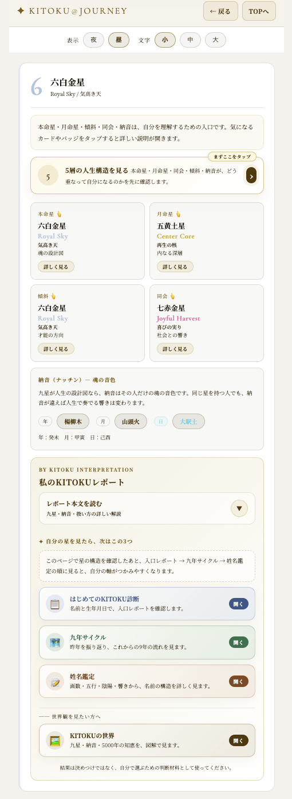
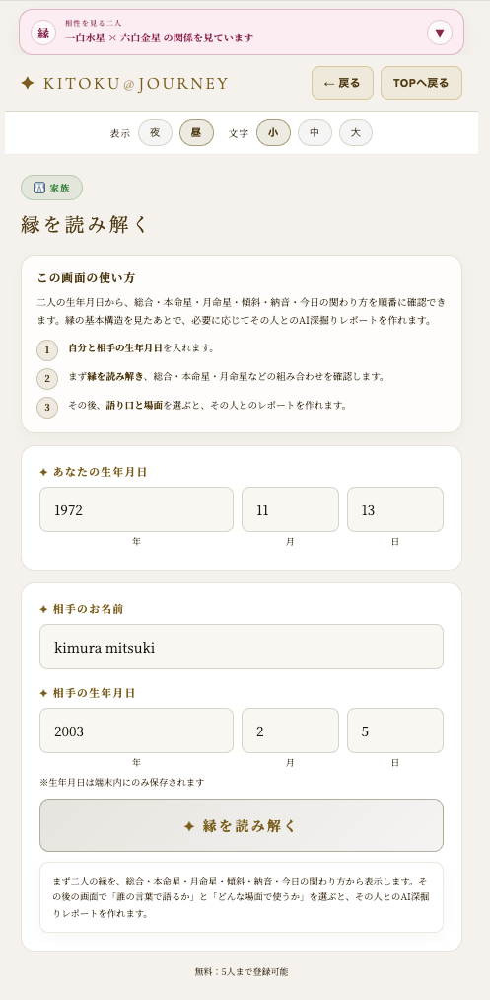
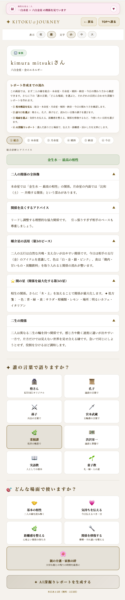
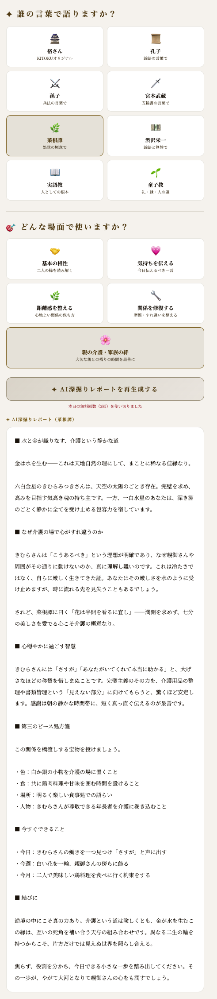

子育て・家族への活用
一番近い人ほど、分かり合えないことがあります。子ども、親、パートナー。家族を星の目で見ると、なぜ噛み合わないのかの理由が見えて、関わり方が変わります。変えるのは相手ではなく、まず自分の見方から。
家族を良い・悪いで裁く回ではありません。近い人ほど難しい。その難しさを、星の理解と、自分から歩み寄る小さな一歩でほどいていく回です。
子どもを月命星で理解する
子ども、とくに10歳未満は、本命星より月命星が前面に出ます。月命星は、内側の感覚、安心の形、幼い頃に出やすい反応を見せてくれる星です。
元気すぎるのではなく、三碧の勢いかもしれません。深く考えすぎるのではなく、一白の繊細さかもしれません。見方が変わると、叱る言葉は活かす言葉に変わります。

星は「この子はこう」と決めるためのものではありません。理解の入口です。相手を変える前に、こちらの見方を変えるための地図として使います。
家族は、星の違いがそのまま出る
家族は、合わせて選んだ縁ではなく、生まれ持った縁です。親子で星が違えば、価値観が噛み合わないのは自然なこと。どちらが悪いのでもありません。
どうしてこの人は、が、この人はこういう星だから、に変わるだけで、心の距離が少し変わります。相手を変えようとせず、自分の接し方を整えることが入口です。
| 見るもの | 意味 | 家族での使い方 |
|---|---|---|
| 本命星 | 表に出る役割 | 社会で見えやすい力、家族の中で担いやすい役割を見る |
| 月命星 | 内側の反応 | 安心する形、近い関係で出やすい反応を見る |
| 相性 | 二人の構造 | 合う・合わないではなく、距離感と伝え方を見る |
| 間の星 | 第3のピース | 食卓・色・場所で、二人の間をやわらげる |

近い人ほど、遠慮なくぶつかります。だからこそ、星の違いを知っておくと、感情だけで受け止めずに済みます。
合わない家族こそ、間の星でつなぐ
08で学んだ間の星は、家族にこそ効きます。親子・夫婦でぶつかりやすい関係でも、間に第3の星を置くと、言葉より先に場がほどけることがあります。
難しい関係には、第3のピースを
一緒に同じ鍋を囲む。共有スペースに間の星の色を置く。家族が集まる食卓や居間を大切にする。小さな場づくりが、関係の空気を変えます。

正しい言葉を探す前に、場を整える。家族では、言葉よりも空気が先に伝わることがあります。
親との時間 - まず心をひらく
親との関係がこじれている時、方位や運の前に、まず一言が入口になることがあります。ごめんなさい。ありがとう。お願いします。弱さではなく、こじれた糸をほどく力です。
完璧でなくてかまいません。全部を解決しようとしなくてかまいません。星の違いを理解したうえで、今日できる小さな一歩を選ぶことが大切です。
親との時間は、人によって重さが違います。こうすべき、と決める必要はありません。できる範囲で、できる言葉からで十分です。

運を開く前に、心をひらく
長年のこじれは、正しさだけではほどけません。たった一言が、関係の扉を少し開くことがあります。
家族のいたわりと、賢者の言葉
家族の誰かが疲れている時、大事なのは整えることより休むことです。無理に動かす必要はありません。今日は家で、温かいものを一緒に。それだけで十分な手当てになることがあります。
気学は、無理を促す道具ではありません。疲れている人を連れ出すより、休める場を作る。話を急がず、少し待つ。それも家族の整え方です。
家族や介護のように重く、答えの出にくいテーマでは、正しい方法を探すより、賢者の言葉にそっと寄りかかるほうが楽になることがあります。
| 語り口 | 家族での使い方 |
|---|---|
| 菜根譚 | 完璧を求めすぎる時に、七分の美しさを思い出す。 |
| 孔子 | 近い人への敬い、礼、和を静かに見直す。 |
| 実語教・童子教 | 世代を超えて受け継がれた、人としての根本に戻る。 |
家族には、一回の正解より、続けられる小さな一歩が必要です。今日できる言葉、今週できる場づくりから始めます。
まとめ - 一番近い人との心から
核心
気学の相談の順番は、心 → 人間関係 → 居場所 → 方位。方位は最後です。まず、一番近い人との心から。
家族は、選べない縁です。だからこそ、変えられない相手を変えようとするより、自分の見方を少し変えてみる。星は、その一歩を助ける地図です。あなたが頑張っていること、それ自体がもう十分に尊いのですから。